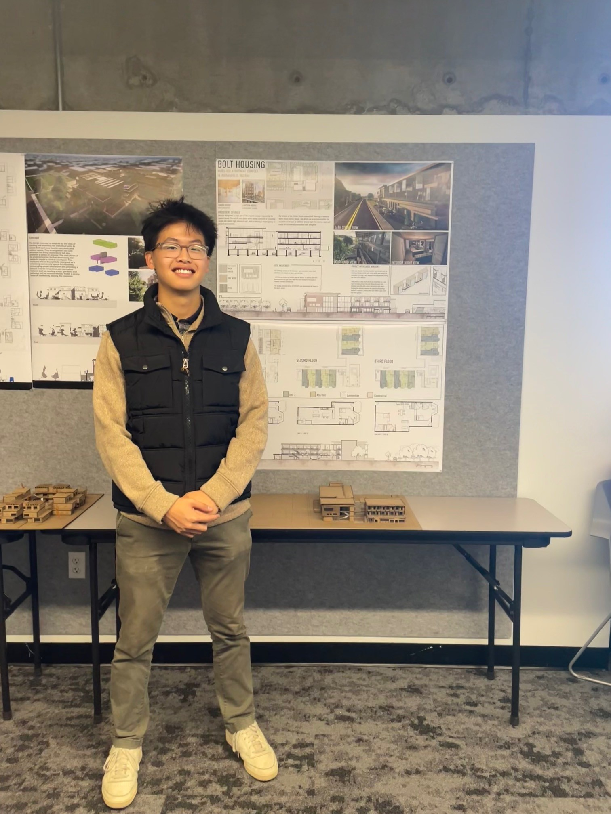
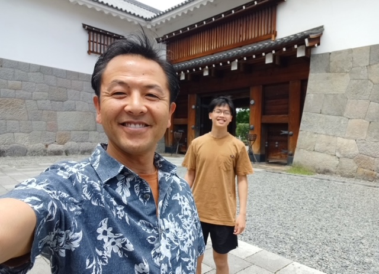
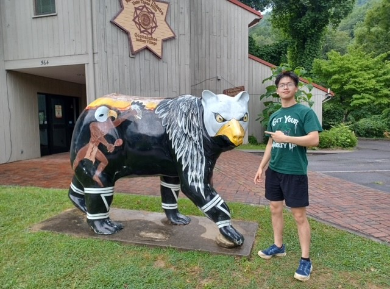
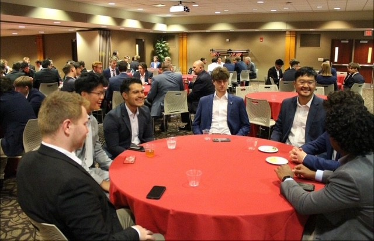
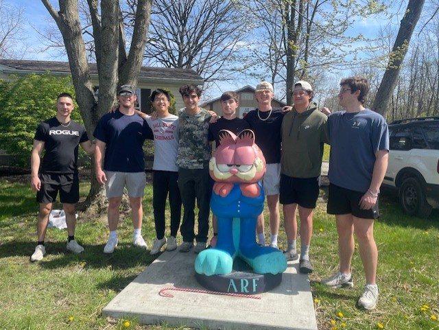

About
Dylan Fujii (Foo-jee)
Born in Georgia, and having spent a year living in Japan during my formative years, I have called Indiana home for most of my life. What a time to be alive.
I’m grateful for my parents and mentors, who have given me a foundation built on hard work, optimism, gratitude, and knowing when to take a step back and recharge.




